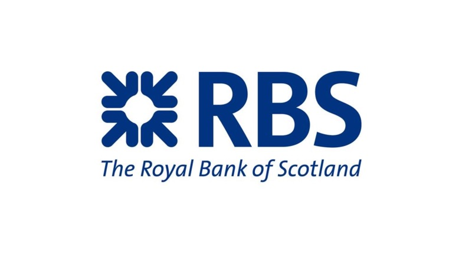

Strategic Business Analyst
Business Optimisation Services - 2009 to 2012 – London
Deliver comprehensive guidance and optimisation for key business processes & systems, conducting exhaustive business analysis to identify and capitalise on potential improvements within global markets.
Selected Contributions:
- Implemented the bank’s integration & simplification strategy, utilising analytical data to define and establish new operational methodologies & standards across Regulatory Risk teams
- Cultivated an open and communicative environment of organisational trust, to secure team & stakeholder buy-in for business optimisation projects and initiatives, by uncovering and addressing concerns about job stability and providing assurance that participation would help shape the successful future of the bank and employees. I travelled to NL, FR, HK, Dubai and the US to build & coach the team
- Documented current operating model & defined the target Trade Surveillance operating model (TOM) and associated Regulatory Risk IT system support technologies and architectures
- Supported Trade Surveillance and Control Room TOM implementations, aiding in vendor selection and defining short, medium and long-term implementation roadmaps
- Delivered vital subject matter expertise for the SHAPE initiative, analysing & documenting the feasibility of IT support & software development outsourcing. Managed high impact process & system changes and controlled outsourced application service & vendor delivery
- Cultivated positive, profitable relationships, co-ordinating workshops & progress meetings to gather requirements, resolve conflicts and issues & communicate status
- Generated comprehensive requirements documentation, including functional, non-functional, UAT & reporting requirements. Reviewed cost, technical feasibility, and strategic plans to develop widespread deployment recommendations. Coordinated and managed UAT & provided knowledge transfer to Compliance & IT, optimising and unifying solutions across all teams & activities
- Worked with business SMEs to embed change and identify what changes, processes, procedures training was needed to achieve results. Successfully used prototypes to identify gaps & risks
- Defined and implemented methodologies and team working practices and standards & mentored junior team members and contributed to the business analysis team’s KPI’s and objectives
- The above lead to massive savings in licensing costs by facing out and decommissioning several systems and removing unnecessary local implementations or process the bank was able to standardise and best-shore 90 % of the Trade Surveillance & Control Room processes to Manchester and India